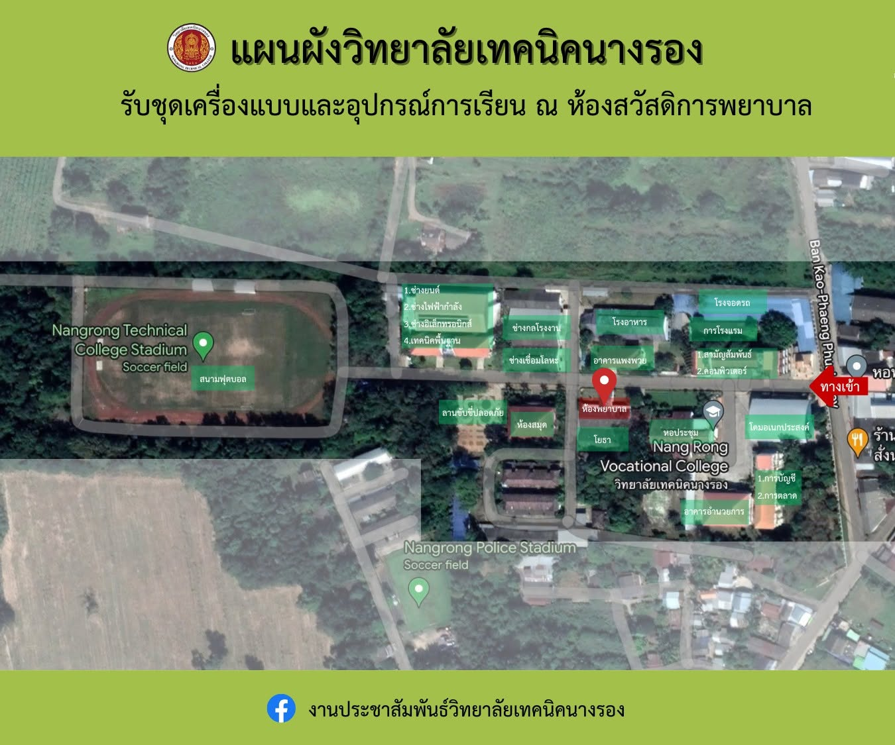

🗺️ แผนผังภาพรวมวิทยาลัย

แผนผังแสดงตำแหน่งอาคารหลักทางมุมสูง

แผนผังจุดบริการและโซนปฏิบัติการช่าง
ข้อมูลอาคารเรียน อาคารปฏิบัติการ และจุดบริการต่างๆ ภายในวิทยาลัยเทคนิคนางรอง
แผนผังแสดงตำแหน่งอาคารหลักทางมุมสูง

แผนผังจุดบริการและโซนปฏิบัติการช่าง
ศูนย์รวมงานบริหารและบริการงานสารบรรณ
• อาคาร 1: หอประชุมใหญ่ และสำนักงานบริหาร[cite: 5]
• อาคารอำนวยการ: ฝ่ายบริหาร, งานทะเบียน, งานการเงิน, งานประชาสัมพันธ์[cite: 5]
📍 การใช้งานหลัก: ติดต่อราชการ ประชุมใหญ่ และบริการนักเรียนนักศึกษา[cite: 5]
ศูนย์เรียนรู้ด้านเทคโนโลยีสารสนเทศ[cite: 4, 6]
• ชั้น 1: ห้องพักครูประจำแผนกวิชาคอมพิวเตอร์[cite: 4]
• ชั้น 2: ห้อง 221 (COM1), ห้อง 226 (COM2)[cite: 4]
• ชั้น 3: ห้อง 237 (COM3)[cite: 4]
📍 การใช้งานหลัก: การเรียนการสอนและซอฟต์แวร์ปฏิบัติการ[cite: 4]
ศูนย์เทคโนโลยีสารสนเทศและห้องค้นคว้า[cite: 4, 6]
• ชั้น 1 (ห้องปฏิบัติการคอมพิวเตอร์):[cite: 4]
- ห้อง ComIT 1, ห้อง ComIT 2[cite: 4]
- ห้อง ComIT 3, ห้อง ComIT 4[cite: 4]
• ห้องสมุด: มุมบริการยืม-คืนหนังสือและสื่อดิจิทัล[cite: 5, 6]
📍 การใช้งานหลัก: สืบค้นข้อมูล และอบรมคอมพิวเตอร์[cite: 4, 6]
อาคารเรียนรวมและโรงฝึกปฏิบัติงาน[cite: 4, 6]
• อาคาร 4 ชั้น 4: ห้อง 445, ห้อง 444[cite: 4]
• โซนช่างอุตสาหกรรม: ช่างยนต์, ช่างไฟฟ้ากำลัง, ช่างอิเล็กทรอนิกส์, ช่างกลโรงงาน, ช่างเชื่อมโลหะ, แผนกวิชาโยธา[cite: 5, 6]
📍 การใช้งานหลัก: ทฤษฎีวิชาพื้นฐานและปฏิบัติงานทางช่าง[cite: 4, 6]
จุดบริการสุขภาพและรับอุปกรณ์การเรียน[cite: 6]
• ห้องพยาบาล / สวัสดิการพยาบาล: สำหรับปฐมพยาบาลเบื้องต้น[cite: 6]
• จุดบริการพิเศษ: จุดรับชุดเครื่องแบบและอุปกรณ์การเรียน[cite: 6]
• ร้านค้าสหกรณ์: จุดจำหน่ายอุปกรณ์การเรียน[cite: 5]
📍 การใช้งานหลัก: ดูแลสุขภาพนักศึกษาและจำหน่ายสวัสดิการ[cite: 5, 6]
ศูนย์อาหารและพื้นที่นันทนาการ[cite: 5, 6]
• โรงอาหาร / อาคารแพงพวย: ร้านจำหน่ายอาหารและเครื่องดื่ม[cite: 5, 6]
• โดมอเนกประสงค์ (หลังเก่า/หลังใหม่): ลานกิจกรรมกลางแจ้ง[cite: 5, 6]
• สนามฟุตบอล / ลานขับขี่ปลอดภัย: พื้นที่ออกกำลังกายและฝึกทักษะ[cite: 5, 6]
📍 การใช้งานหลัก: พักผ่อน เข้าแถว เคารพธงชาติ และเล่นกีฬา[cite: 5, 6]